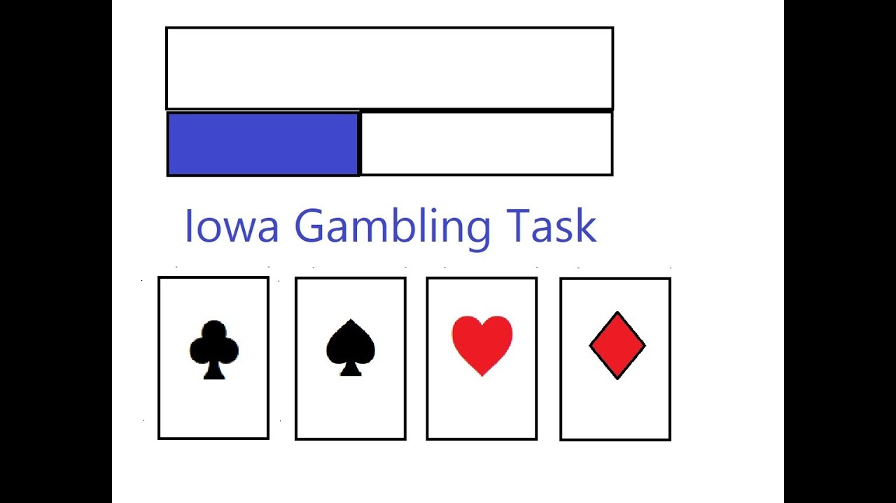

This project used a convolutional neural network (CNN) to classify images of cats and dogs, focusing on improving performance through data augmentation, batch normalization, and dropout. Training accuracy improved steadily, while validation metrics revealed signs of overfitting after several epochs. By analyzing performance curves and refining the model, we gained hands-on experience with CNN development, optimization, and evaluation in deep learning.

Behavioral Analysis of the Iowa Gambling Task (IGT)
This project analyzes behavior in the 100-trial Iowa Gambling Task (IGT) using open-source data to examine how decision-making evolves over time. Participants choose among four decks with varying reward-loss profiles, simulating real-life risk-based choices. We tracked shifts in deck preference, computed net scores across trial blocks, and visualized learning trends. Results show increasing selection of advantageous decks (C and D) and rising net scores, indicating adaptive behavior. Summary statistics confirmed the expected reward-loss asymmetries across decks. This analysis highlights how behavioral data can reveal learning and strategy shifts in decision-making under uncertainty.
This project applies machine learning to classify hand movement directions from MEG data using Common Spatial Patterns (CSP) and wavelet-based time-frequency analysis. Using BCI Competition IV Dataset 3 (Subject S1), we built a pipeline with preprocessing (bandpass filtering, ICA artifact removal), CSP feature extraction, and SVM classification. ICA significantly boosted classification accuracy—from 52% to 88%—by reducing non-brain artifacts. Additional analysis of ERPs, spectral power, and CSP topomaps revealed spatiotemporal brain dynamics distinguishing movement classes. Wavelet-based features alone achieved high accuracy (82.5%), showing their utility in decoding motor intentions from MEG signals.
This project applied multivariate pattern analysis (MVPA) and machine learning to fMRI data from the Haxby 2001 dataset to decode visual categories from brain activity. Using Python tools like Nilearn and Scikit-learn, we implemented a full pipeline including preprocessing, ROI-based decoding, searchlight analysis, representational similarity analysis (RSA), and multi-class classification. Binary classification of faces vs. houses achieved >95% accuracy, with peak decoding localized to the fusiform and parahippocampal regions. RSA confirmed category-specific neural patterns, and multi-class decoding further demonstrated robust classification across all eight categories. Even after removing top voxels, performance remained above chance, highlighting the distributed nature of visual representations in the brain.